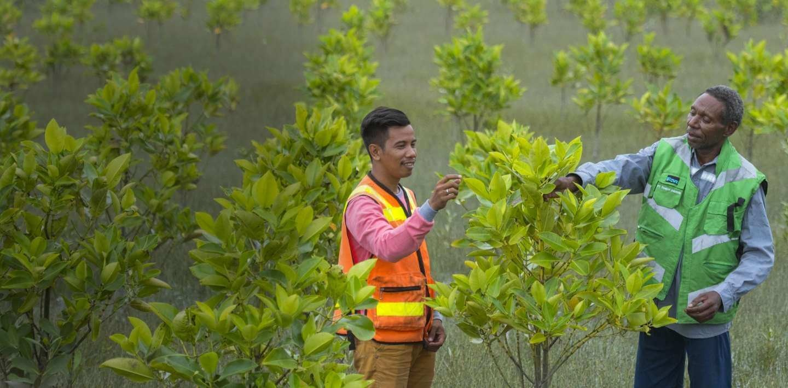
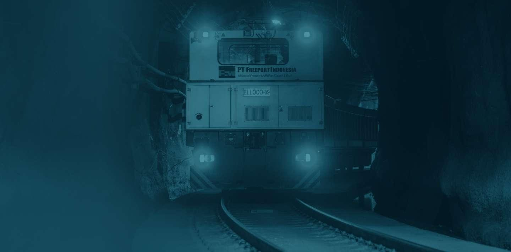
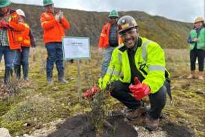
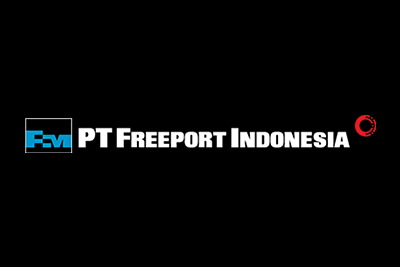
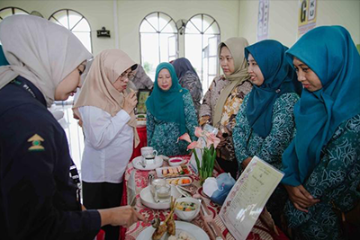
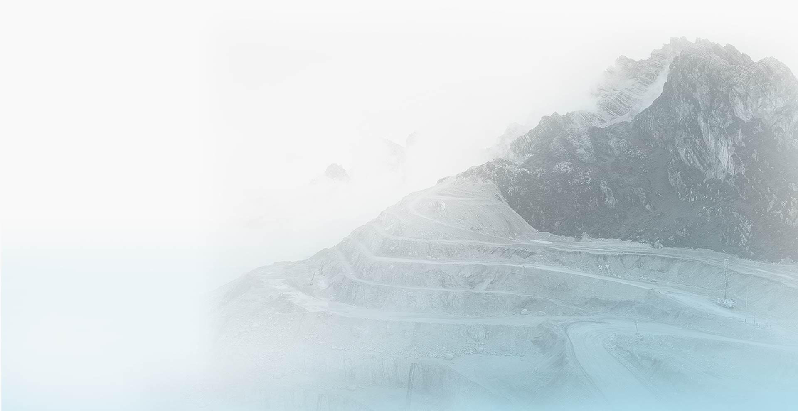
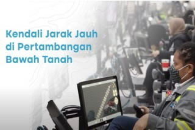
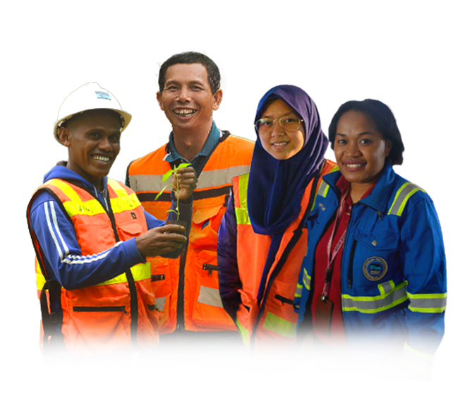

Tujuan Kami
Kami terus berkarya untuk memberikan manfaat bagi bangsa, masyarakat, serta lingkungan di mana kami beroperasi.

Lingkungan
Aksi Penghijauan di Grasberg Awali Rangkaian Hari Lingkungan Hidup

Operasional
Tim Penyelamat PT Freeport Indonesia Temukan Seluruh Rekan

Sosial
Ibu-ibu sekitar Smelter Freeport Belajar Olah Pangan Lokal

Media Freeport




Berkarir Bersama Kami
Tantangan Kami, Peluang Anda
Kami menerapkan prinsip inklusif dan keragaman dalam setiap proses rekrutmen karyawan.